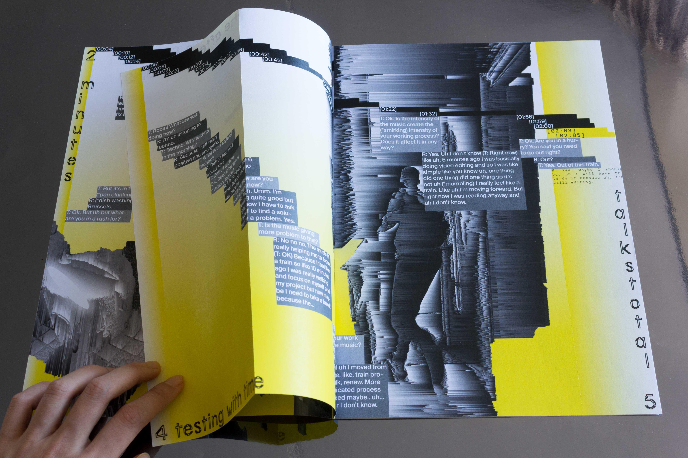
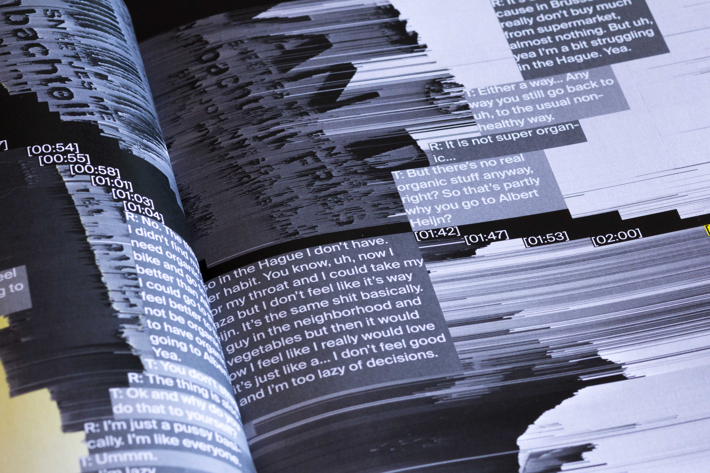
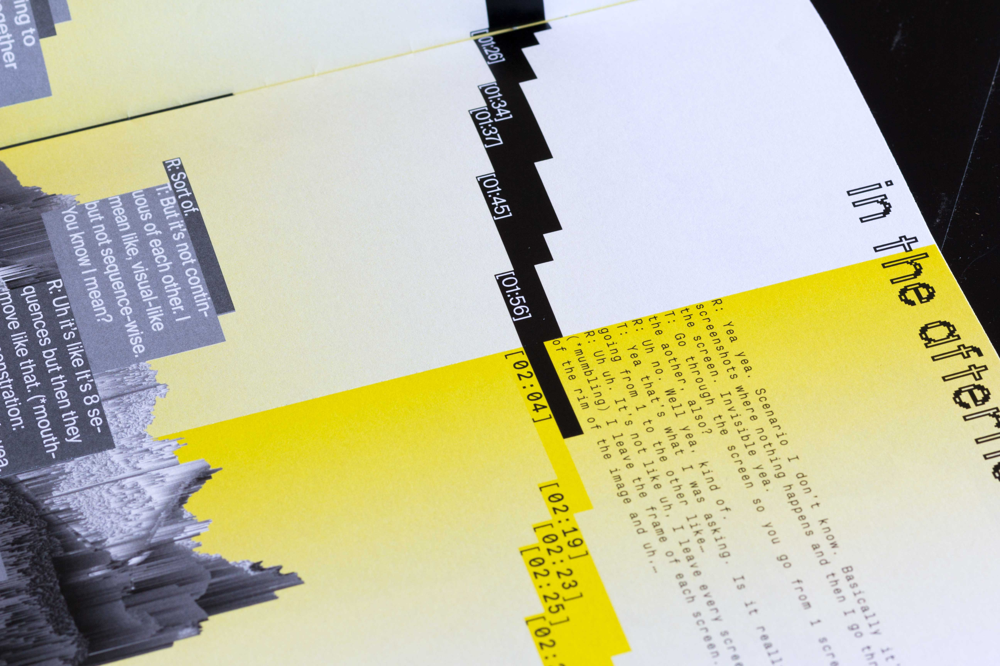
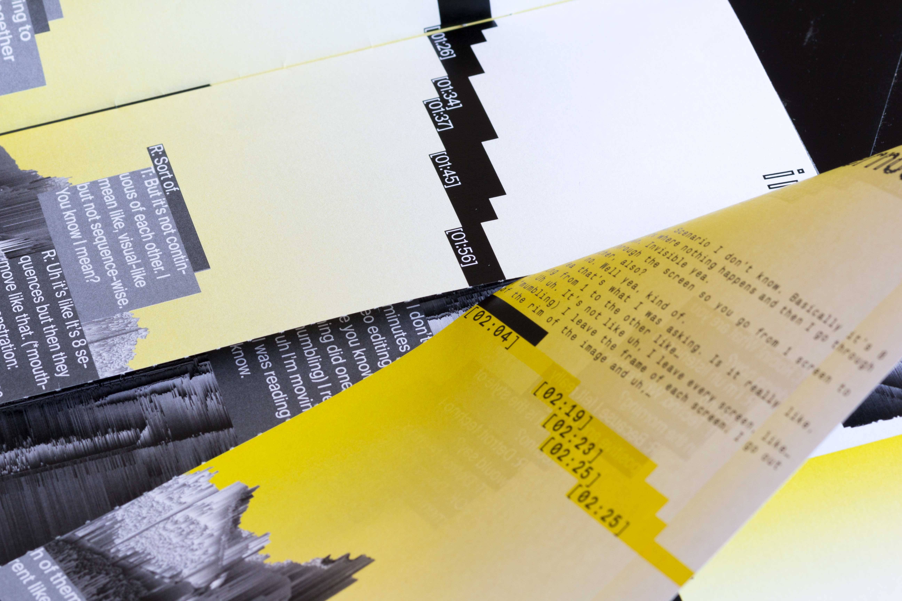
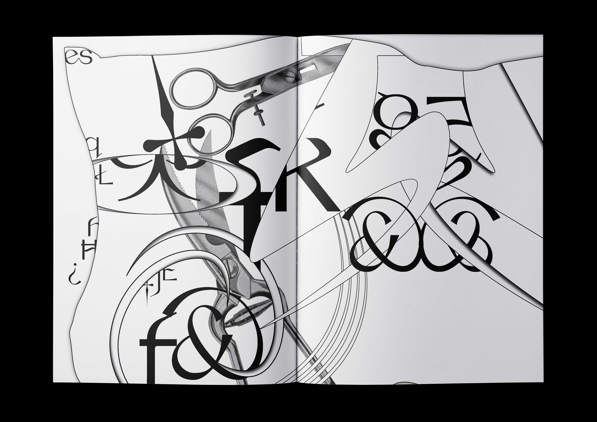
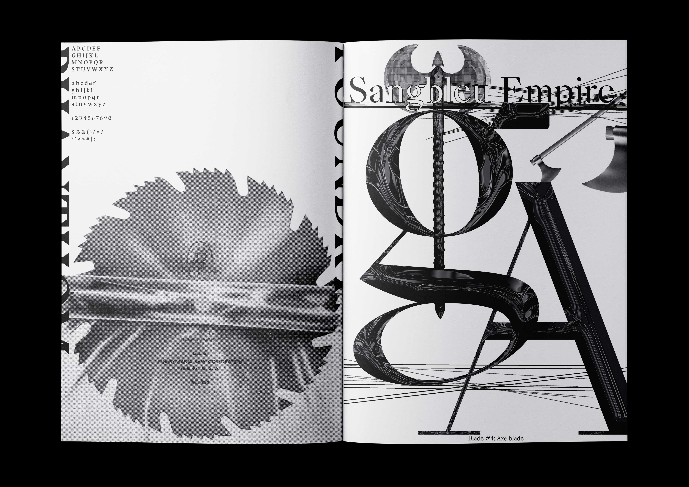
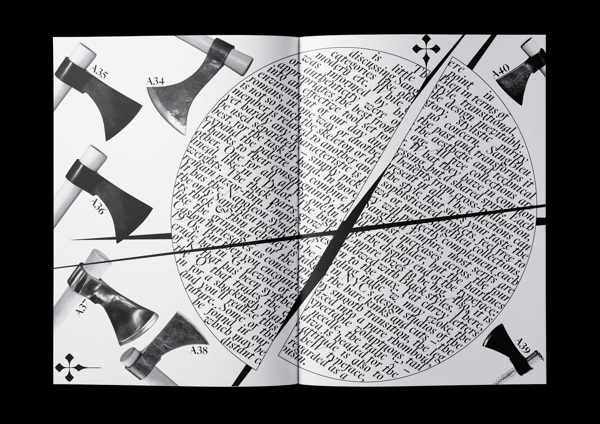
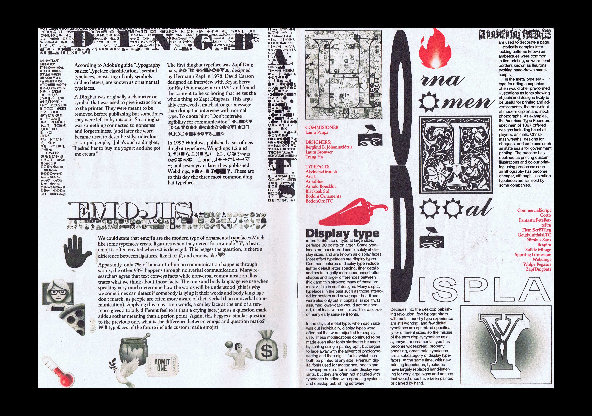
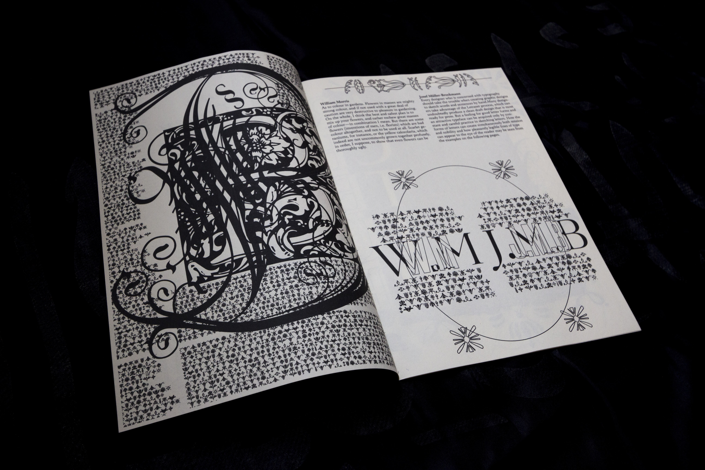

THANKS ROBIN—thanks for trying to spend so little time at the beginning since you are in a hurry, thanks for prolonging the answers and thanks for chatting with Messenger in case verbal speech is difficult to organize in real time. Variations are the key.
1.
2.
3.
4.
5.

In Conversation On Top of So-called Time
How is time spent? What does it mean to be in a hurry? What is online time? The interview is made under the constraints of several rules made about time. The book is designed to reflect on this aspect, where there is always a certain limit of time and the fact that the interviewee could not resist to exceed it.
1. Inside spread of 'Sharp Specimens', 2019.
1.
2.
3.
4.

5.
Sharp Specimens
A mini-catalogue of 10 selective typefaces that most resemble sharp objects. Each typeface corresponds with the aesthetic of the object it pairs with.
As colour in gardens. Flowers in masses are mighty strong colour, and if not used with a great deal of caution are very destructive to pleasure in gardening. On the whole, I think the best and safest plan is to mix up your flowers, and rather eschew great masses of colour—in combination I mean. But there are some flowers (inventions of men, i.e. florists) which are bad colour all together, and ... to show that even flowers can be thoroughly ugly.
—William Morris
1.
2.
Ornamental Types
A book on ornamental and display typefaces—how these typefaces are connected to, for example, the arts and crafts ideals and other means of visual/textual communication.